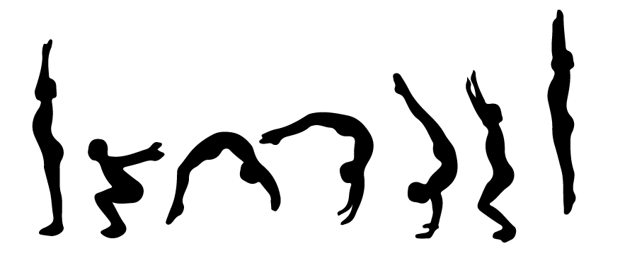

Sobre nós
O treinertumb é uma plataforma dinâmica e rápida destinada aos
treinadores de tumbilg, que integra as ferramentas necessárias para
facilitar o controle dos atletas. Foi desenvolvida com o objetivo de
otimizar o tempo, obter e organizar as informações dos atletas,
provas, juízes, entre outros e gerenciar as informações de maneira
rápida e eficaz e assim ter um controle dinâmico e estruturado dos
dados.
